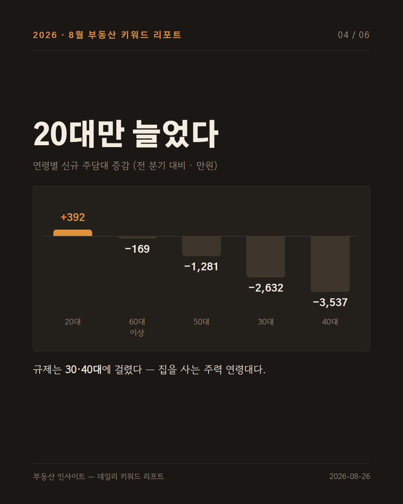
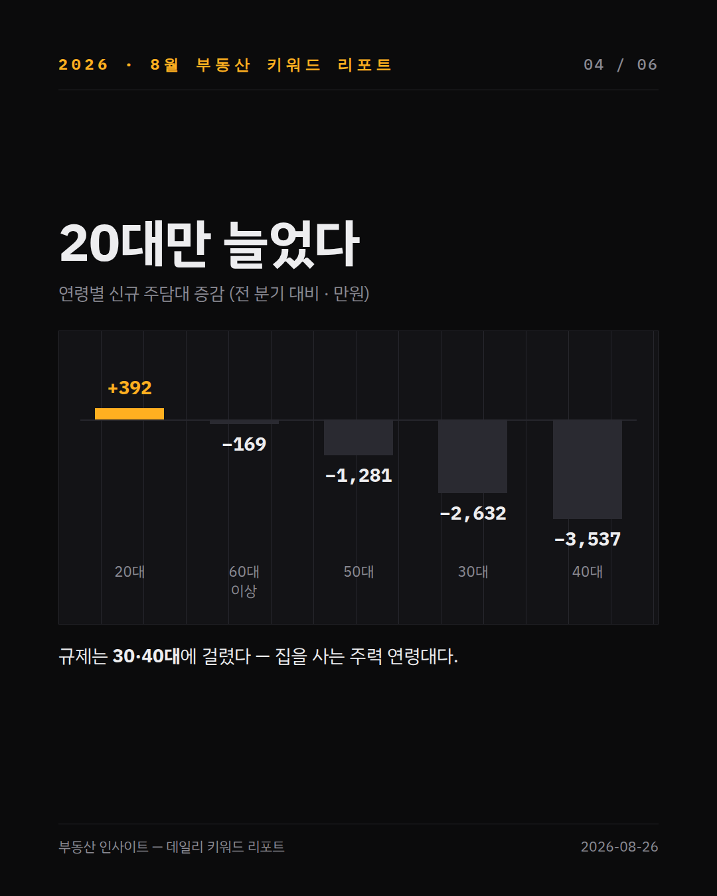
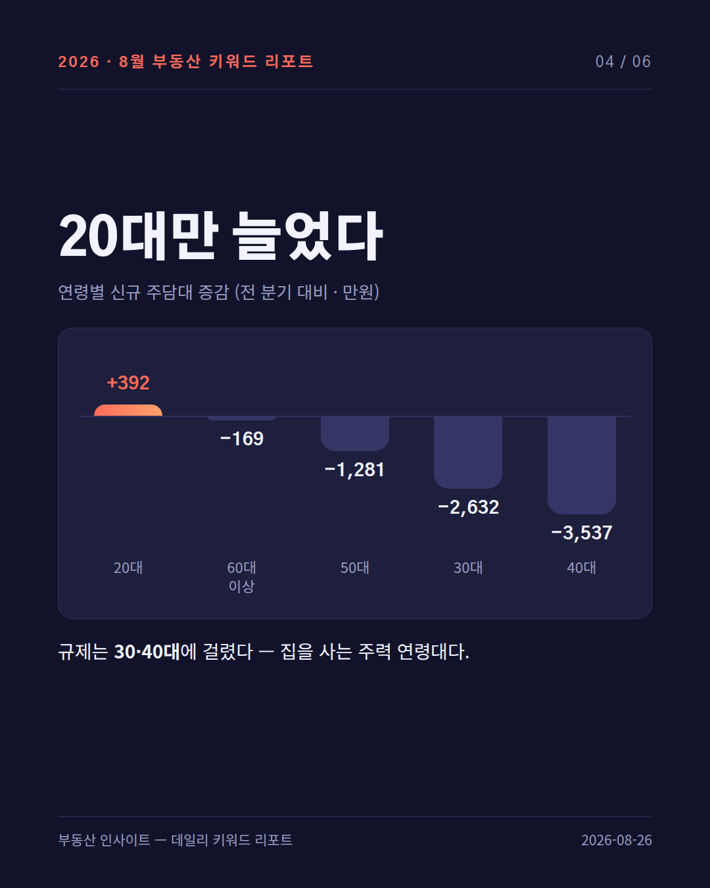
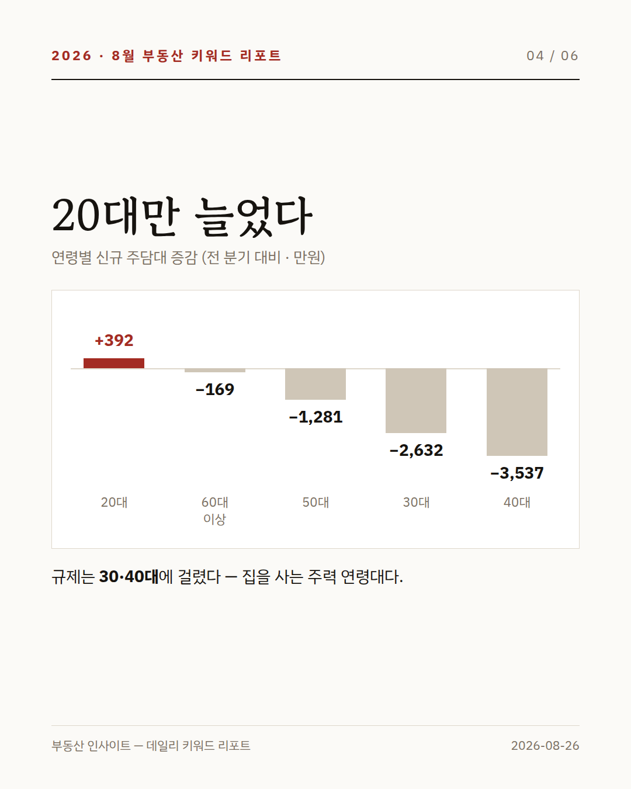
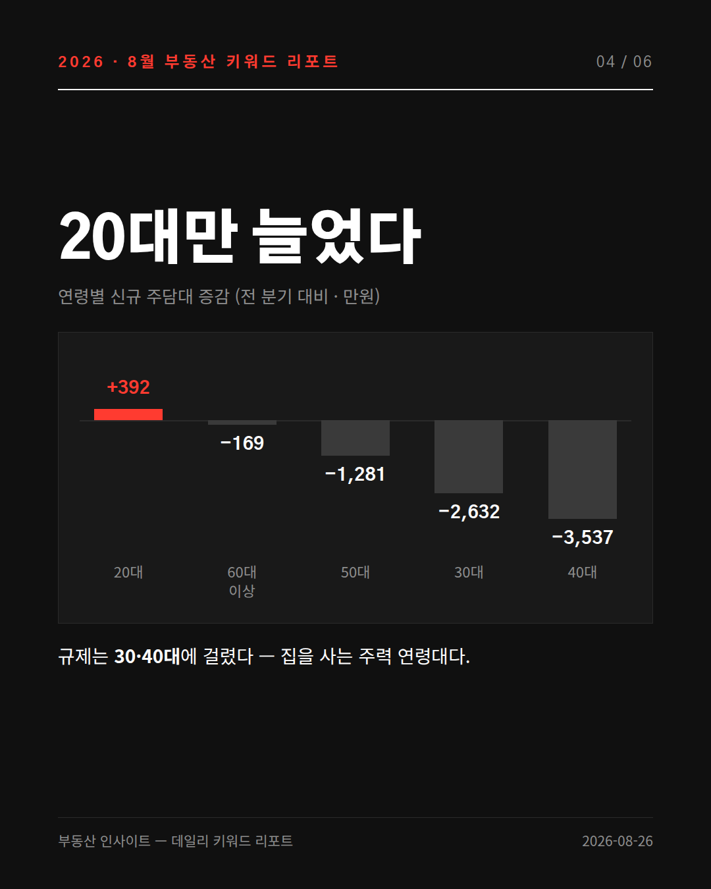

인스타 캐러셀 디자인 후보 5안
같은 카드(리포트 #39 · 연령별 신규 주담대 증감)를 5가지 디자인 언어로 만든 실물 비교입니다. 표지가 아니라 데이터 카드로 만들었습니다 — 카드 6장 중 3~4장이 차트라서, 차트가 어떻게 보이는지가 실제 선택 기준이 됩니다.
규격 1080 × 1350 (4:5) · 2026-08-26
✔ 결정 — 2안 터미널 데이터 (2026-08-26)
인스타(임장로그)는 2안으로 확정. 릴스 9:16 · 캐러셀 4:5 모두 이 테마로 나갑니다.
블로그(부동산 인사이트)는 기존 3테마(다크 리포트 · 화이트 · 에디토리얼) 유지 — 테마 확장은 하지 않습니다.
공통 원칙: 지금 쓰는 네이비 + 민트 그라데이션 · Noto 폰트 · 균일한 14~18px 라운드 조합을 5안 모두 쓰지 않았습니다. "AI가 만든 것 같다"는 느낌은 대부분 이 세 가지에서 옵니다.
1안
먹지 다크 — Ink & Ochre
따뜻한 먹색 종이에 황토색 한 점. 인쇄물 같은 무게감.

#1A1714 바탕 · #E0913C 황토 강조
제목 Gothic A1 900 · 본문 고운돋움 · 라운드 8px · 그라데이션 없음
↑ 차분하고 오래 봐도 안 피곤함. 부동산·금융 톤에 잘 맞음.
↓ 인스타 피드에서 튀는 힘은 약함.
2안 · 채택
터미널 데이터 — Mono Grid
거의 검정 바탕 + 앰버. 숫자는 고정폭 서체, 라운드 0, 격자 노출.

#0B0B0C 바탕 · #FFB020 앰버 단색
제목 IBM Plex Sans KR 700 · 숫자 IBM Plex Mono · 라운드 0 · 세로 격자
↑ "데이터 리포트"라는 정체성이 가장 선명. 숫자 자리가 딱 맞아 표·차트가 정돈됨.
↓ 차갑고 기술적임. 실수요자 대상 콘텐츠엔 문턱이 있을 수 있음.
3안
미드나잇 코랄 — Soft Deep
깊은 인디고에 코랄. 큰 라운드, 부드러운 앱 같은 느낌.

#12132A 바탕 · #FF6B5A → #FFA36B 코랄
제목 Gothic A1 900 · 본문 Noto Sans KR · 라운드 22px
↑ 인스타에서 가장 눈에 걸림. 2030 타깃과 궁합이 좋음.
↓ 현행 다크와 구조가 비슷해 "색만 바꾼" 느낌이 남을 수 있음.
4안
신문 명조 — Paper Ink (유일한 라이트)
누런 종이에 명조 제목, 먹빨강 한 점. 신문 지면 같은 신뢰감.

#FBFAF7 종이 · #A32B22 먹빨강
제목 고운바탕 700(명조) · 본문 IBM Plex Sans KR · 라운드 0 · 괘선 구획
↑ 5안 중 "AI 티"가 가장 없음. 명조 제목이 곧 차별점. 네이버 블로그 본문과도 톤이 맞음.
↓ 릴스는 다크로 고정했으므로 캐러셀과 릴스의 톤이 갈립니다.
5안
볼드 모노크롬 — Poster
검정·흰색·빨강 셋만. 제목을 최대한 크게, 장식 없음.

#101010 바탕 · #FF3B30 빨강 · 흰색 본문
제목 Gothic A1 900 88px · 라운드 0 · 장식 최소
↑ 작은 썸네일에서도 제목이 읽힘 = 인스타 도달에 가장 유리.
↓ 색이 셋뿐이라 차트에서 계열을 구분하기 어려움. 데이터가 많은 카드엔 불리.
고르기 어려우면 — 제 추천
2안(터미널 데이터) 또는 1안(먹지 다크)입니다.
릴스를 다크로 고정했으니 캐러셀도 다크여야 채널 톤이 하나로 잡힙니다. 그 안에서 2안은 "데이터를 다루는 채널"이라는 성격이 제일 분명하고, 1안은 같은 다크인데 덜 차갑습니다.
4안(신문 명조)은 디자인 자체로는 가장 강한데, 릴스와 톤이 갈리는 대가를 치릅니다. 블로그 본문은 4안, 인스타는 1·2안으로 나누는 조합도 가능합니다 — 그렇게 원하시면 그것도 말씀해 주세요.